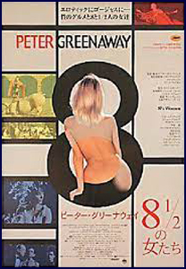
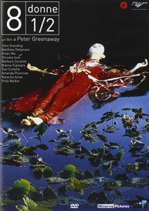
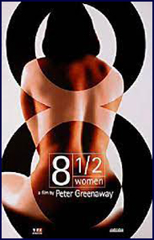

After the death of his wife Amelia, wealthy businessman Philip Emmenthal (John Standing) and his son Storey (Matthew Delamere) open their own private harem in their family residence in Geneva. They get the idea while watching Federico Fellini's 8 1⁄2 and after Storey is "given" a woman, Simato (Shizuka Inoh), to waive her pachinko debts. They sign one-year contracts with eight (and a half) women to this effect.
The women each have a gimmick (one is a nun, another a kabuki performer, etc.). Philip soon becomes dominated by his favourite of the concubines, Palmira (Polly Walker), who has no interest in Storey as a lover, despite what their contract might stipulate. Philip dies, the concubines' contracts expire, and Storey is left alone with Giulietta (the titular "1⁄2" as an amputee) and of course the money and the houses.
Philip Emmenthal
Storey Emmenthal
Kita
Simato
Griselda / Sister Concordia
Beryl
Giaconda
Mio
Giulietta / Half Woman
Palmira
Celeste
Marianne

Toni Collette said Peter Greenaway chose her by accident for the role of Griselda. "I went in for another part and I had just had my head shaved and I had a Buddha hanging around my neck. Afterwards I thought, 'This is going to teach me to go to an audition looking like that'."
While the film deals with and graphically describes diverse sexual acts in conversation, the film does not feature any sex scenes as such, though it does contain several instances of male nudity.

